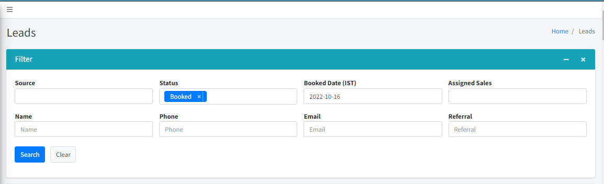
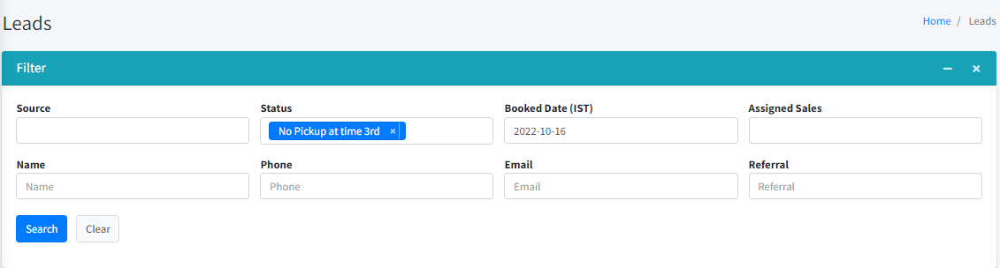
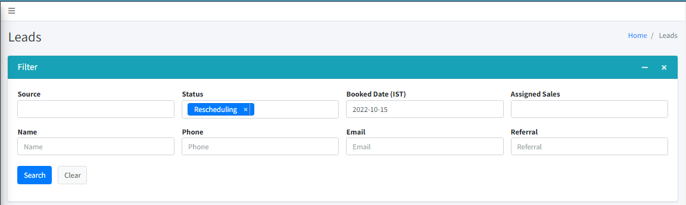
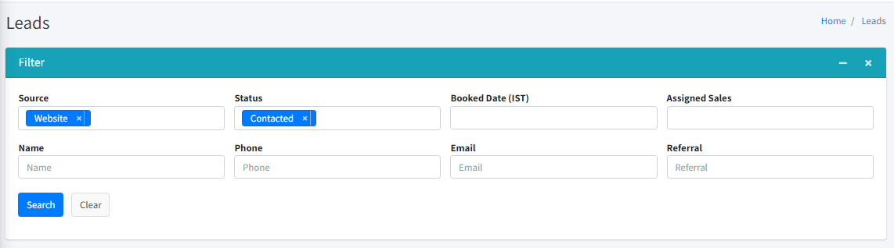

Booked - start calling at least 30 minutes earlier and/or at the exact scheduled time. Dial 2 times. If VM, then change status to No Pickup at 1st.

No Pickup at 1st - you can start dialing on the 30th minute of the hour (Ex. 22:30, 23:30, 00:30, etc,). Dial 2 times. . If VM, then change status to No Pickup at 2nd. Send a text with the live link and leave a voicemail ONCE.
No Pickup at 2nd - you can start dialing on the 40th minute of the hour. Dial 2 times. If VM, then change status to No Pickup at 3rd. No VM and no text this time.
PRIORITIZE THE BOOKED LEADS. When you don't have booked leads, then start calling your no pickup at 1st and 2nd. No VM and no text this time.
Yesterday No Pickup at 3rd Leads
Dial each lead/number once. Change the status to CANCELED if students did not pickup, send a text with the live link.

Rescheduling Leads
If for LEIF or KICKOFF - assign it to the AC that was in the assigned sales, but it that AC is in another session, then reassign it, but do not change the name of the assigned sales. Do not change the names, but you can have a different AC do the KO if the AC already assigned is not available

When rescheduling, before setting up an appointment for the rescheduling, try to ask the questions to check student's eligibility. This is to help us all save time. At least we will know if students are eligible or not.
Leave notes in the CRM as well of their eligibility. So that people assigned in the rescheduling won't be asking the same questions to students
Website Contacted Leads

Remove all not eligible leads under contacted
Cancel double booked leads
Call all contacted leads
Clear no pick up at 3rd
Then clear no pick up 2nd, and ang no pickup 1st.
By end of shift, all leads should be no pickup at 3rd. All no pick up at 1st, 2nd & contacted should be cleared.
Important Note:
If the lead/student hung up the phone on the first call/dial, then you need to try calling one more time. If the call's routed to voicemail, then change the status to CANCELED. Leave a note in the CRM the reason it's canceled.
ALWAYS check session assignment sheet for available ACs. Compare with the posts on slack to see if the status was updated or not.
Calling team, you are the ones who will change the status in the CRM from BOOKED, RECHEDULING, NO PICKUP to "ON-GOING" in the CRM. Do not forget to click the name of the assigned sales.
No need to call back students that have successfully joined the session. You are only allowed for a call back if the student is not yet in the Zoom. ACs have their iplums, so no need for you to call them back when they have joined the Zoom meeting. Unless student is not yet in the Zoom, then you should call the student.
How to know if students joined? See the reaction of the ACs on your post.
Do not ask if students are available, do everything to make them take it now or later.